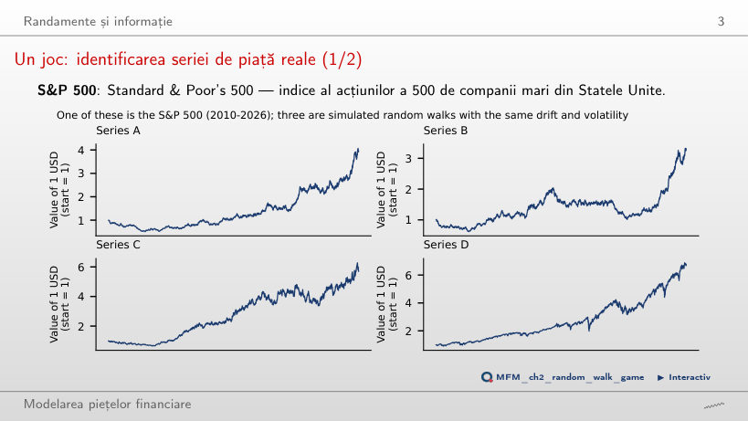
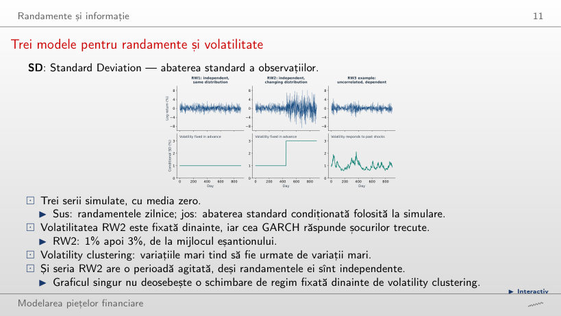
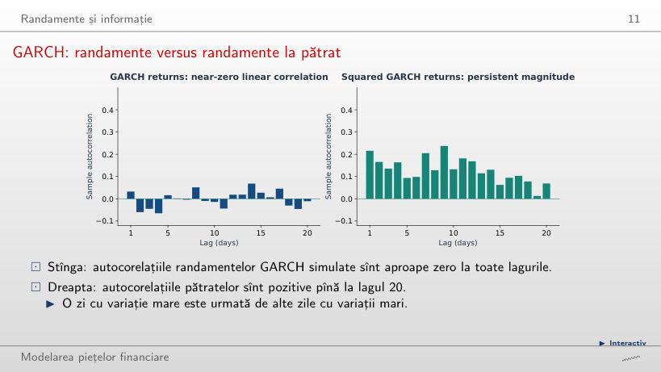
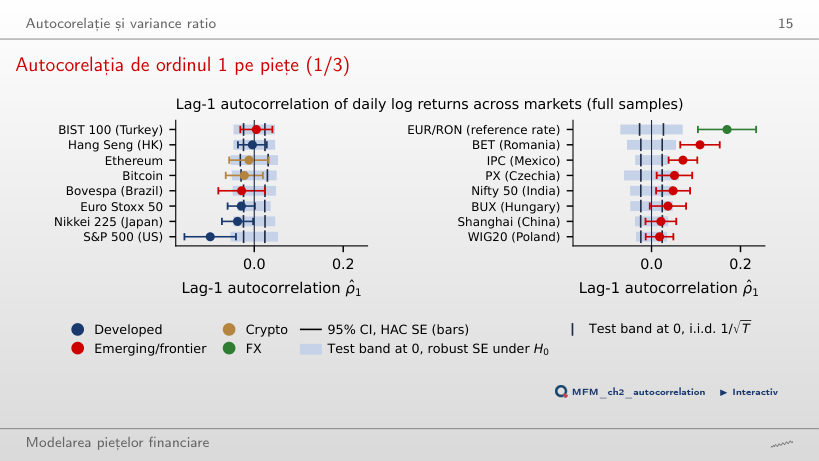
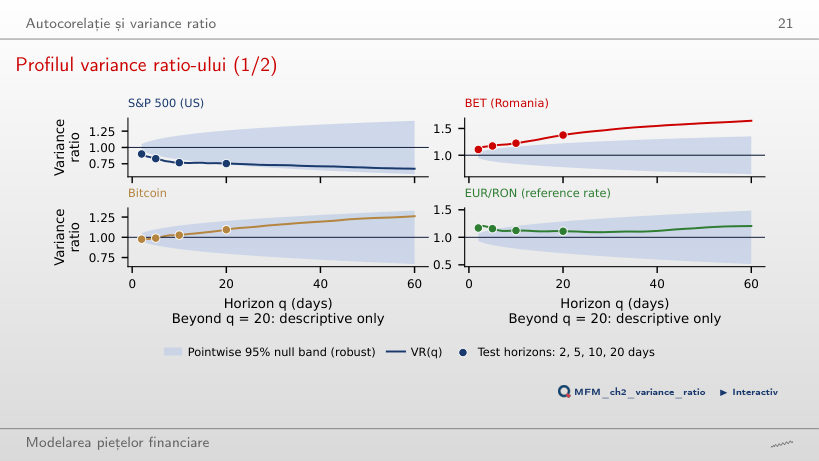
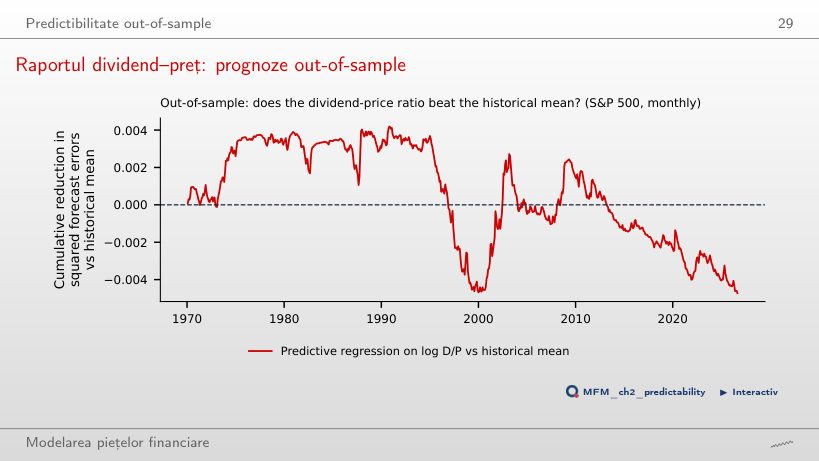
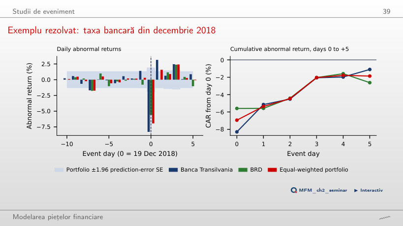
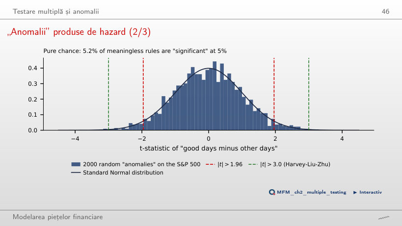
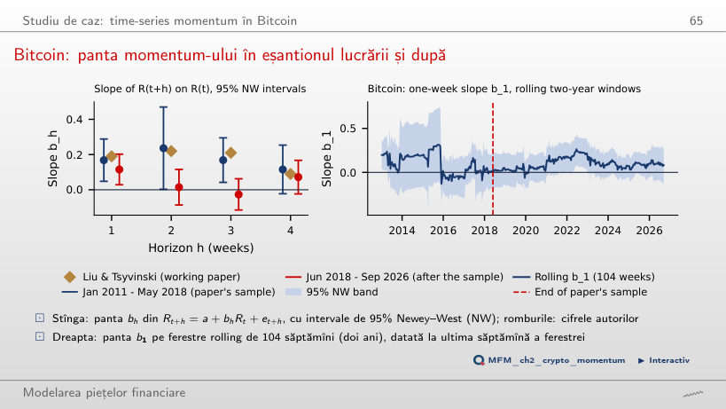

În stînga este slide-ul din curs, în dreapta aceeași figură, calculată în browser din aceleași date. Butonul ▶ modifică parametrul pas cu pas.
Randamente și informație · Autocorelație și variance ratio · Predictibilitate out-of-sample · Studii de eveniment · Testare multiplă și anomalii · Studiu de caz: time-series momentum în Bitcoin
Randamente și informație
Un joc: identificarea seriei de piață reale

Răspuns
Seria D. Pe ochi nu se poate spune: random walk-urile simulate au și ele trenduri, cicluri și prăbușiri aparente. De aceea testăm eficiența cu statistici, nu prin inspecție vizuală.
Trei modele pentru randamente și volatilitate

Răspuns
Clar peste 3: 4,8, față de 3,0 pentru RW1 și 4,1 pentru GARCH. Amestecul unei perioade calme cu una agitată dă cozi groase fără nicio dependență, deci nici graficul randamentelor, nici kurtosis-ul nu deosebesc RW2 de GARCH. Diferența este alta: în RW2 volatilitatea crește la o dată fixată dinainte, iar randamentele rămîn independente; în GARCH volatilitatea de azi depinde de șocul de ieri (α = 0,08) și de volatilitatea de ieri (β = 0,90), deci randamentele sînt dependente.
GARCH: randamente versus randamente la pătrat

Răspuns
Crește: în seria de 900 de zile este 0,05 la α = 0, 0,22 la α = 0,08 și 0,27 la α = 0,095. Cea mai mare autocorelație a randamentelor, în valoare absolută, rămîne între 0,064 și 0,074, iar cele ale pătratelor rămîn pozitive pînă la lagul 20. Randamentele nu sînt independente: seria respectă RW3, dar încalcă RW2, pentru că mărimea variației de azi depinde de șocurile trecute.
Autocorelație și variance ratio
Autocorelația de ordinul 1 pe piețe

Răspuns
Nu, respinge cu amîndouă. Eroarea robustă sub H₀ (0,027) este de peste două ori mai mare decît cea i.i.d. (0,012), dar −0,099 rămîne în afara ambelor benzi de test din jurul lui zero. Diferența contează la piețe ca Euro Stoxx 50 sau Nikkei 225, unde ρ̂₁ iese din banda i.i.d., dar rămîne în cea robustă. Barele din jurul estimațiilor sînt intervale de încredere cu eroarea HAC a estimatorului (S&P 500: 0,030); ele servesc la comparații, nu la testul ρ₁ = 0.
Profilul variance ratio-ului

Răspuns
Null band-ul se lărgește cu q: marginea de jos este 0,817 la 10 zile și 0,740 la 20 de zile. La 20 de zile valoarea 0,754 rămîne în interior. Cu mai puține perioade independente de 20 de zile, aceeași abatere de la 1 este măsurată mai puțin precis.
Predictibilitate out-of-sample
Raportul dividend–preț: prognoze out-of-sample

Răspuns
Nu. Pentru orice început între 1970 și 2015, R²OS rămîne negativ: −1,37% din 1990, −0,01% din 2000, −2,75% din 2010. Curba urcă pînă în 1990, iar boom-ul anilor 1990 șterge avantajul. Testul Clark–West pe 1970–2026 dă t = 0,42 (p = 0,34), deci nu respingem lipsa predictibilității.
Studii de eveniment
Exemplu rezolvat: taxa bancară din decembrie 2018

Răspuns
Că componenta anormală a scăderii TLV, măsurată față de BET, este aproape compensată în următoarele cinci ședințe: CAR pe zilele +1 pînă la +5 este +7,2% (t = 3,82). Asta nu arată că prețul acțiunii și-a recuperat pierderea: pe zilele 0 pînă la +5, randamentul logaritmic este −15,6% la TLV și −12,7% la benchmark-ul BET. Poate fi o reacție excesivă, efectul unor știri ulterioare sau un efect al benchmark-ului: BET, dominat de bănci, a scăzut odată cu TLV (−11,9% în ziua 0) și nu a revenit (−0,8% pe zilele +1 pînă la +5). Un singur eveniment nu separă cele trei explicații.
Testare multiplă și anomalii
„Anomalii” produse de hazard

Răspuns
Aproximativ 5%: în simulare 5,2%, adică 104 reguli. Șase reguli au |t| > 3,0; cea mai bună are |t| = 3,30 și ar trece pragul 3,0 dacă ar fi raportată singură. Cu cît sînt încercate mai multe reguli, cu atît crește cel mai mare |t| obținut din întîmplare.
Studiu de caz: time-series momentum în Bitcoin
Bitcoin: panta momentum-ului în eșantionul lucrării și după

Răspuns
Nu rezultă de aici. O abatere standard în plus azi adaugă doar 0,96% randamentului săptămînii următoare, față de 2,98% pe perioada eșantionului lucrării (pînă în mai 2018, cu datele cursului). Calculul nu are costuri de tranzacționare, ajustare la risc sau prognoze out-of-sample, iar pe ferestrele rolling de doi ani b₁ este semnificativ în doar 13% din ferestre.
Indici bursieri, Bitcoin, Ethereum, TLV, BRD și BET: prețuri zilnice EODHD, pînă la 18 septembrie 2026. EUR/RON: cursul de referință BNR. S&P 500 lunar cu dividende: datele publice ale lui Robert J. Shiller, prelungite cu prețurile zilnice ale S&P 500; dobînda la titlurile de stat pe 3 luni din FRED (TB3MS).